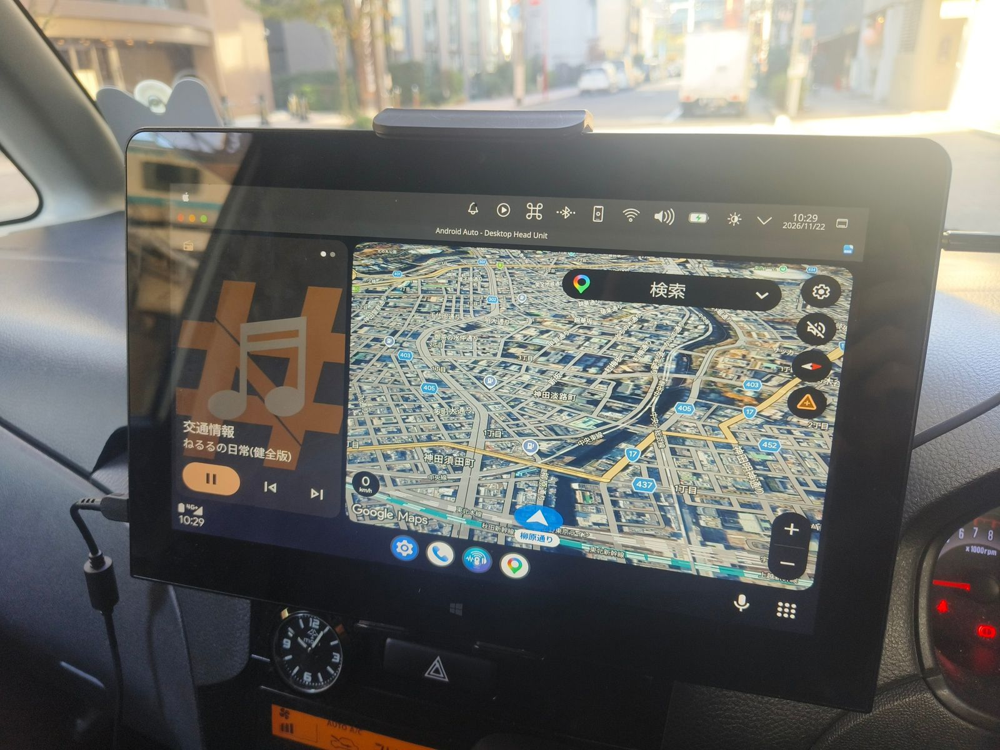
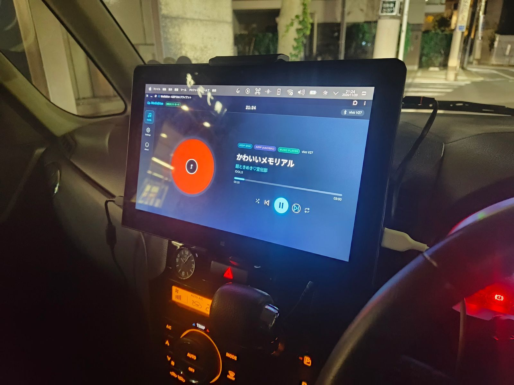
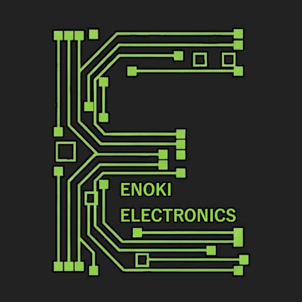

Android Auto
同梱の「Linux Auto」で、USB接続またはWi-Fiテザリング経由でAndroid Autoが使えます。Googleマップのナビと音楽を1画面に並べて表示できます。初回起動時に必要なGoogleのSDKのインストーラが立ち上がります。
WELCOME TO MOTIVNAVI OS
眠っている2 in 1タブレットを、カーナビに。
Motivnavi OSは、家で使われずに眠っている中古の2 in 1タブレットを、カーナビとしてよみがえらせるためのLinuxベースのOSです。 Android Auto、Bluetoothオーディオ、インターネットラジオ、日本語のタッチ入力など、車の中で欲しい機能を最初から使える状態でまとめています。 開発はエノキ電気です。
同梱の「Linux Auto」で、USB接続またはWi-Fiテザリング経由でAndroid Autoが使えます。Googleマップのナビと音楽を1画面に並べて表示できます。初回起動時に必要なGoogleのSDKのインストーラが立ち上がります。
スマホとBluetoothでつなぐと、スマホの音声をタブレットから再生できます。通話にも対応。再生中の曲名などは「Mediablue」に表示されます。
AzuraCast規格に対応したラジオプレイヤー「Castify」を同梱。好きなラジオ局のほか、エノキ電気のおすすめ放送も聴けます。
日本語入力に対応したスクリーンキーボードを標準搭載。かな漢字変換や英語入力、通常のキーボード入力にも対応しています。
充電中は画面が消えません。充電していないときはすぐに画面を暗くし、短い時間でスリープに入ります。
USBやタッチなどの入力ではスリープから戻りません。電源ボタンを押すか、充電が始まると復帰します。
メモリ4GB・eMMCの端末でも動かせるよう、軽さとタッチ操作との相性を考えてKDE Plasmaを採用しています。
運転中でも押しやすいようにアイコンを大きくし、ウィンドウは最大化された状態で開きます。
一般的なLinuxの派生OSなので、debファイルやaptコマンドでアプリを追加できます。自分でアプリを作ることもできます。
Waydroidを別途インストールすればAndroidアプリも動かせます。ISOを軽くし低スペック端末の負担を減らすため、標準では入っていません。
| 推奨 | 最低 | |
|---|---|---|
| 検証端末 | Lenovo ThinkPad Helix (2015) | Fujitsu Q506 |
| CPU | Intel Core M-5Y71 | Intel Atom x5-Z8500 |
| メモリ | 4GB以上 ブラウザやWaydroidを多用するなら8GB以上 | 4GB以上 |
| ストレージ | SSD 64GB以上 | eMMC 64GB以上 |


写真をタップすると大きく表示できます。
タブレットはType-CもしくはACコンバーター経由で、アクセサリ電源で充電してください。
タブレットは重いため、確実に落ちないように固定してください。
タブレットの3.5mmジャックを純正カーステレオのAUXに繋いでください。
タブレットの3.5mmジャックからの音声がドライバの関係で聞こえない場合は、USB-3.5mmジャック変換アダプタを間に挟んでください。
夏場はタブレットの車内放置によるバッテリー膨張にお気を付けください。

DEVELOPED BY
ENOKI ELECTRONICS
Motivnavi OS © 2026 エノキ電気